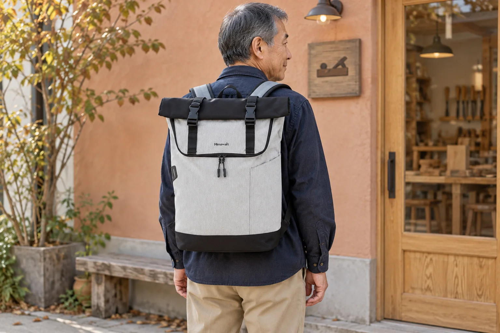

롤업 백팩을 닫기 전: 맨 위 짐과 접히는 자리 살피기

짐을 다 넣었는데 가방 입구를 접을 자리가 모자랍니다. 롤업형 백팩은 물건이 몸체에 들어가는 것과 입구를 원래 형태로 여미는 것을 함께 살펴야 합니다. 마지막 물건을 넣은 뒤 곧바로 버클을 당기기보다, 접히는 부분 아래에 무엇이 놓였는지 먼저 보세요.
맨 위 물건이 접히는 부분을 밀고 있나요
딱딱한 책 모서리나 세로로 세운 케이스가 입구의 접히는 부분까지 올라오면 닫는 동작이 불편할 수 있습니다. 물건을 아래로 강하게 누르기보다 맨 위에 놓인 것의 방향을 바꾸거나 하나를 꺼내 빈 상태와 비교해보세요. 어떤 높이까지 채울 수 있는지는 자신의 가방과 실제 짐으로 확인합니다. 사진에 보이는 여유만으로 동일한 수납량을 기대하지 않습니다.
원래 여밈을 기준으로 한쪽씩 확인합니다
No.1682 그레이 원본에서는 검정색으로 접힌 윗부분과 앞면의 두 검정 버클·세로 끈이 보입니다. 버클을 연결하기 전에 천이나 다른 소품이 연결부 사이에 들어가 있지 않은지 살펴보세요. 접는 횟수나 끈을 조이는 정도는 제품 사용 안내에 따라 확인합니다. 버클이 맞닿지 않을 때 끈을 세게 당겨 짐을 압축하는 방식으로 해결하지 않습니다.
다시 꺼낼 물건이 있다면 출발 전에 열어봅니다
입구 바로 아래에 휴대전화나 확인할 종이를 넣었다면 출발 직전 한 번 꺼냈다가 닫아보세요. 처음에는 잘 닫혔어도 물건을 다시 넣으며 위치가 달라질 수 있습니다. 급하게 움직이면서 접힌 입구를 푸는 상황을 줄이려면 자주 꺼낼 물건의 실제 수납 위치를 따로 정합니다. 원본에서 보이는 앞면 지퍼가 그 물건에 맞는지, 내부로 이어지는지는 별도의 확인이 필요합니다.
닫힌 모습과 카탈로그 숫자는 구분해 둡니다
제조사 카탈로그의 No.1682 외부 크기는 가로 30 × 세로 50 × 폭 14cm입니다. 이 표기만으로 펼쳤을 때와 접었을 때의 높이 차이나 실제 용량을 계산할 수는 없습니다. 출발 전에는 양쪽 버클과 끈의 상태, 입구에 끼인 물건이 없는지 다시 봅니다. 접힌 형태가 물을 완전히 차단한다는 뜻도 아니므로 비가 오는 날의 사용은 제품 관리 안내와 함께 확인하세요.
참고·안내
- Himawari No.1682 제품 정보
- 실제 Himawari No.1682 그레이 원본과 카탈로그 치수를 참조한 AI 착용 연출 사진입니다. 인물과 장소는 가상이며 고객 후기나 실측 착용 사진이 아닙니다.
자주 묻는 질문
롤업 입구는 몇 번 접어야 하나요?
원본 사진만으로 정해진 접기 횟수를 확인할 수 없습니다. 제품 사용 안내를 확인하고 실제 짐을 넣었을 때 여밈이 자연스럽게 연결되는지 살펴보세요.
버클을 세게 당기면 짐을 더 넣을 수 있나요?
닫히지 않는 원인을 먼저 확인합니다. 접히는 자리까지 짐이 올라와 있다면 배치를 바꾸거나 일부를 나누고, 버클과 끈으로 강하게 압축하지 않습니다.